[SH2] James, 29, Clerk at a Small Company
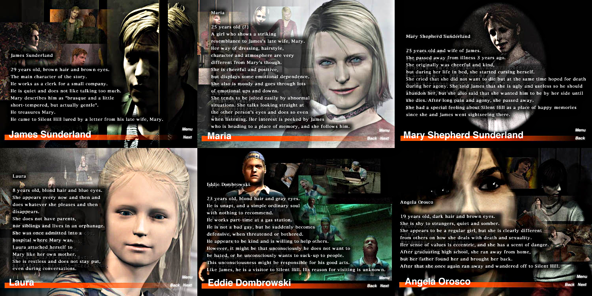
Introducing the English and Japanese Content from SH2's Old Official Website
This is a mirror of the DeviantArt version linked above, provided as a backup and for easier access.

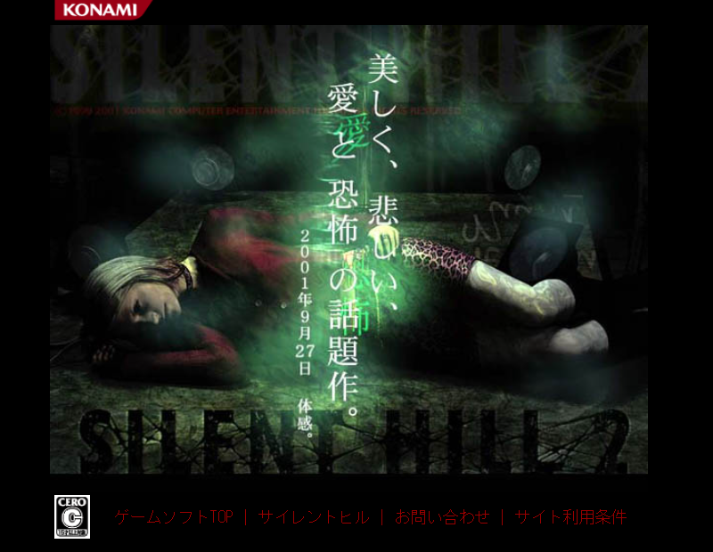
I've covered some pieces of official SH4 information before, but I hadn't really focused much on the other titles, so this time it's SH2. Though it's all on the same domain, it still might not be very well known.
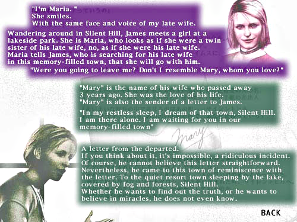
🌐Konami SILENT Hill 2
https://web.archive.org/web/20051125073245/http://www.konami.jp/gs/game/sh2/index.html
🌐最期の詩 (Director's Cut) and Xbox (Japanese)
https://web.archive.org/web/20080610070209/http://www.konami.jp/gs/game/sh2x/index.html
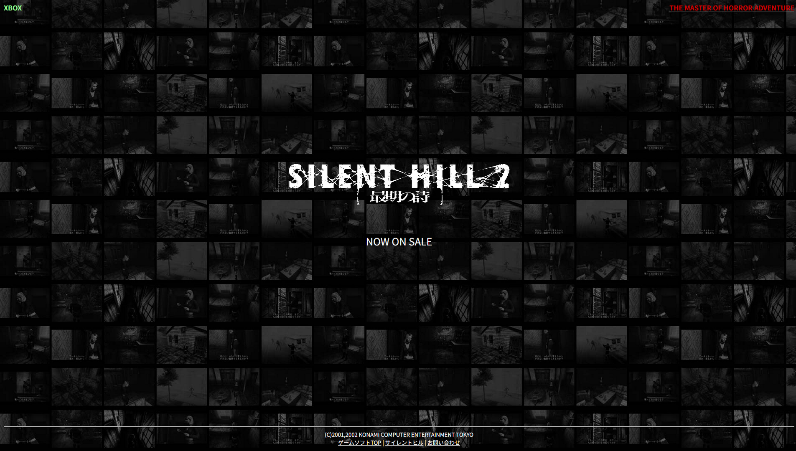
SH2 also had pages for the Director's Cut and Xbox versions, plus an English site. The English versions existed up through SH3, but SH4 probably didn't get one...
Compared to the original Japanese pages, the English version has fewer pages and less info. This was a very typical Japanese website thing. Translating takes time, after all! So if you look closely at the images, you can faintly see the Japanese underneath. They were clearly edited from the Japanese version. Not that anyone asked, but I also take forever to write in English and still notice mistakes after posting, haha.
The English SH2 site only has five sections: Home, Introduction, Character, Creature, and Contact Us. Meanwhile, the Japanese version has a lot more pages like Story and Movies.
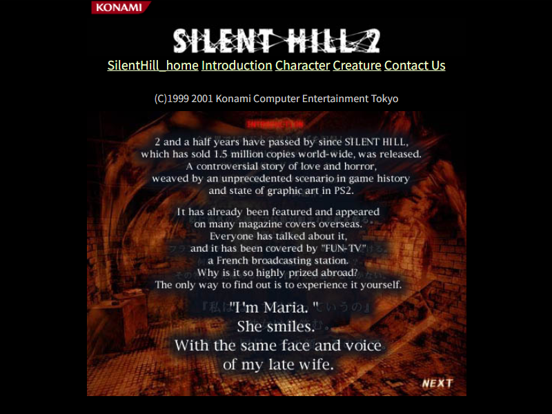
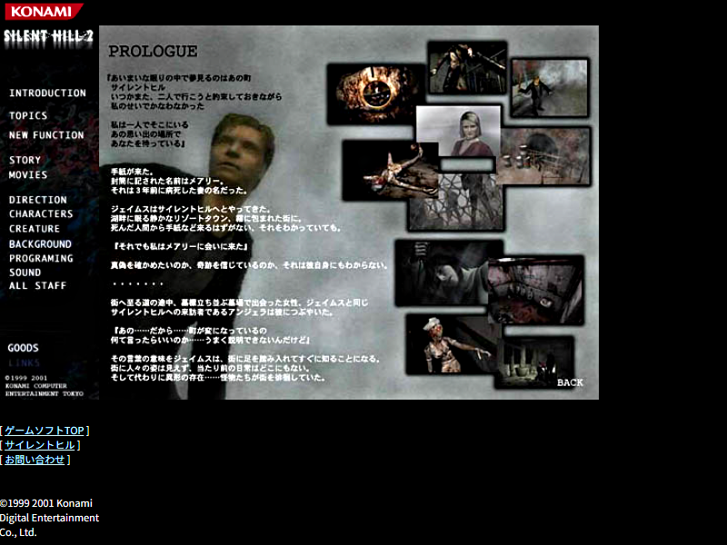
If you're interested, feel free to try translating them yourself, though the Japanese pages are also mostly image-based.
Either way, the real core of the site is probably the character profiles and creature info. Thankfully, both of those have English pages.
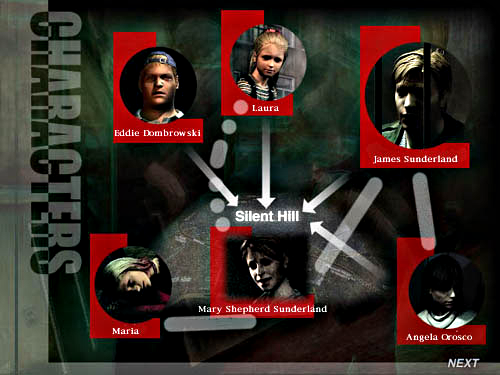
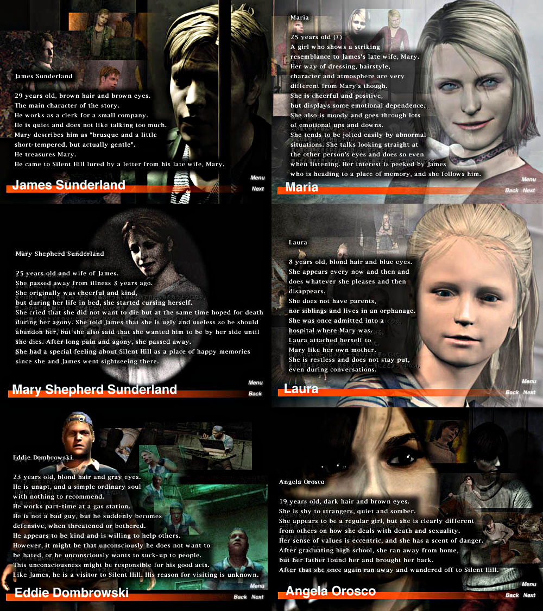
Some pages on a certain site say those came from the manual, but those are official website info. So they have navigation links like Next and Back.
By the way, not just in SH2 but throughout the whole Silent Hill series, enemies are called "monsters" in English, while the Japanese version calls them "creatures." Both are technically English loanwords, but in Japanese nuance, "monster" feels more like something huge and hairy, while "creature" sounds more strange, unnatural, and smooth.
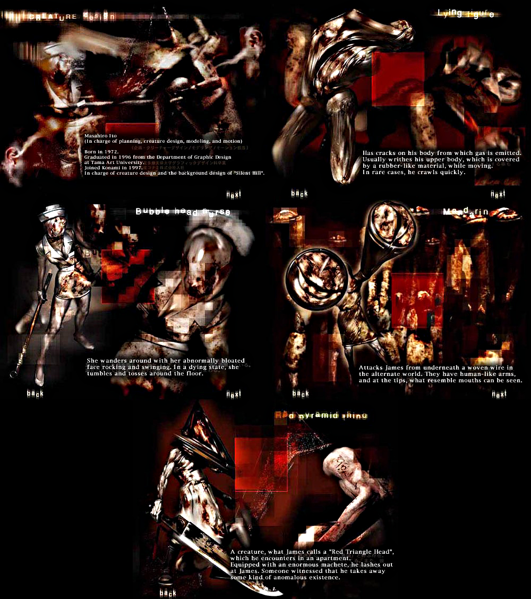
Japanese-only pages include profiles for Tsuboyama-san, Yamaoka-san, and Hatakeda-san, plus the story, PVs and gameplay videos, the Silent Hill map, and the full names of all SH2 staff members, etc.
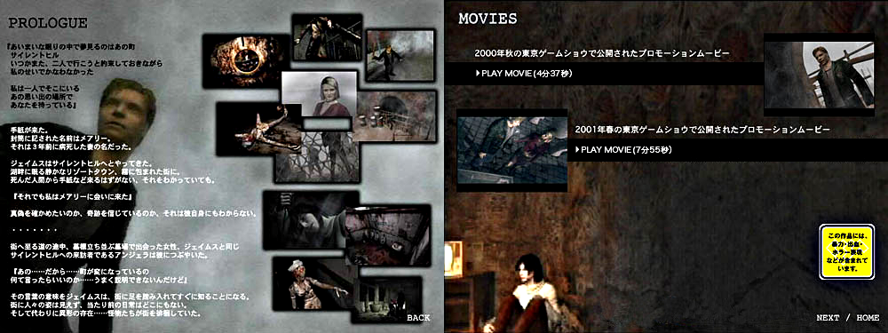
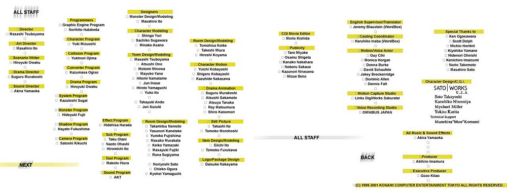
Not just SH2, but respect to everyone who worked on the entire series!